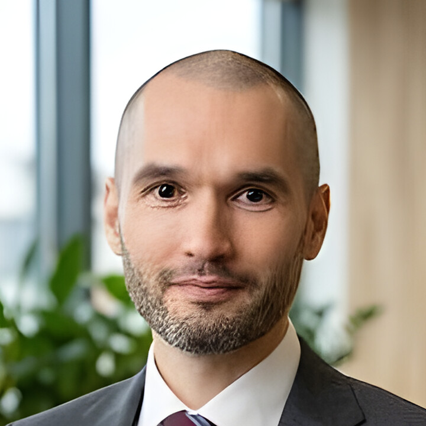

Формулируем вопрос
Определяем, какое управленческое решение должно приниматься по результату.
О Avtarkia
Avtarkia помогает собственникам и руководителям перейти от разрозненных отчётов к проверяемой управленческой картине.
Обсудить задачу
Эксперт
Специализация — управленческая аналитика, финансовые модели, автоматизация отчётности и контроль качества данных.
Как строится работа
Определяем, какое управленческое решение должно приниматься по результату.
Согласуем источники, правила расчёта, допущения и контрольные суммы.
Визуализация появляется после проверки цифр, автоматизация — после подтверждения повторяемости.
Подход Avtarkia
Финансовая модель задаёт смысл показателей, инженерный контур обеспечивает повторяемую загрузку, а контроль качества связывает итог с исходными операциями. Это особенно важно там, где собственник, бухгалтерия, продажи и разработчики используют разные определения одной цифры.
Перед визуализацией формируется словарь показателей и набор контрольных примеров. Если правило нельзя объяснить пользователю и проверить на исходной строке, оно не считается готовым.
Компетенции и ответственность
Управленческая отчётность, финансовые модели, SQL, Python, BI и автоматизация повторяемых процессов.
Avtarkia не заменяет аудитора, налогового консультанта или штатную ИТ-службу там, где требуется их формальная ответственность.
Публичные профили подтверждают личность и опыт. Результаты проектов публикуются только с учётом конфиденциальности клиента.
Как подтверждается результат
Публичные реквизиты
Банковские реквизиты и адрес предоставляются сторонам договора при необходимости.
Связаться
Определим первый полезный контур аналитики, источники данных и правила расчёта.